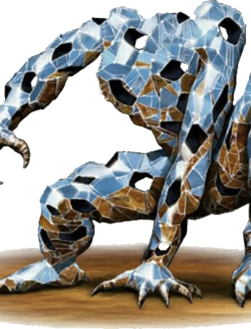
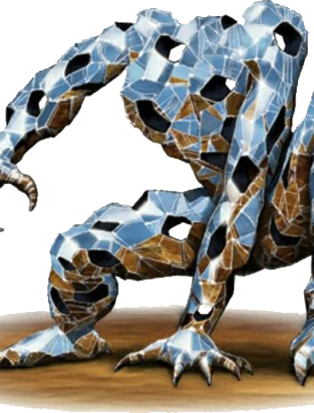

ORIGIN OF THE X'TAL
During the early beginnings of the infamous Horus Heresy, the apothecary known as Fabius Bile had practiced several different methods of obtaining power. Power worthy of being called a god above that of even the Emperor himself. In order to boost the capabilities of his ever-loyal armada, he conducted several experiments that, while following some rather ambitious theories, were morally bankrupt. It was also extremely dangerous to the test subjects who the experiments were forced upon. Fabius held his personal belief that a little bit of pain and death was but a trivial price for power.
These experiments, hidden from the prying eyes of those close to him, ranged from a variety of unethical tests using only the most ‘worthy’ of subjects. These were expendable scraps gathered from his army's captive war prisoners. From the use of mental reprogramming, to the unethical use of drugs and serums that had been banned across several galaxies, the rising body count of his subjects was a direct testament to his success rate. In regard to finding the answer he was looking for, he found himself no closer. Continuously, he pursued several other methods and even several more approaches to those methods but the end-result remained the same. Proof of his failure was etched on the endless amount of twisted faces and bodies of the subjects whose only purpose was to die in vain in the name of nothing. His results were but a few new scraps of knowledge and yet the ever so ambitious Fabius continued on.
Having gone through option after option and finding very little else to try, he turned his eyes unto one of the most precious resources of all his former brethren -- The Gene-seeds. With the fire of inspiration, he went on a crusade that would incite attacks upon many locations that contained the Imperium's stores of gene-seeds. Achieving what not even the Adeptus Astartes had been able to since the First Founding, Fabius had created his ultimate configuration, a Gene seed of his own design.
Fabius continued on to gather the required materials for his plans and through eventual circumstance he received a plethora of frighteningly intriguing gene-seed blueprints from the Alpha Legion men that he had chosen to assist him in his mission. They claimed their material would help Fabius on the path to crafting the perfect chimera, a beast-like form of man that knew no equal on the battlefield. As long as his execution was perfect every step of the way, the Emperor would and could do nothing but bow to him.
The bodies of Fabius' ultimate space marines violently rejected the conflicting genetic code, twisting and rending them into screaming monstrosities that bulged with splitting muscle and bursted with organs that swelled to fatal proportions. Those that took longer to die were simply unlucky, wishing desperately for death that would only slowly come to them.
The experiment was a fantastic failure, one that pushed Fabius into abandoning his the lab full of rotting monstrosities and continue on his conquest to fight the Imperium using more direct methods. Since that time, the lab and its leftover resources were forgotten until the ongoing war inevitably arrived to its area, wiping what remained of the lab off the host-planet's map and scattering the surviving gene-seeds into the four winds.
For several millennia since then, the multitude of gene-seeds sunk deep into the planet’s earth, coming into contact with the rich amounts of minerals as well as the buried remains of armor-pieces and warships that had come and gone since the Heresy and the events from then on. Due to the undiluted dark nature of the apothecary’s experiments, the begotten seeds from that cursed lab festered with the tormented auras of the lives that were lost in their vain struggle for power, beckoning forward the chaotic forces of the Warp. Its influence seeped between every grain of sand, every crevice, and every crumb of dirt that concealed the resting seeds, igniting forth a new brand of evolution that neither Fabius nor the Imperium of Man could ever hope to accomplish with their current methods.
Amongst the midfield of a long-abandoned landscape, several limbs and spires of crystal and rock rise up from the earth, fueled by the unforgotten ire of a horrific past.
